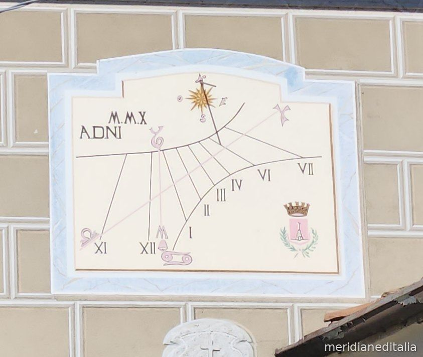
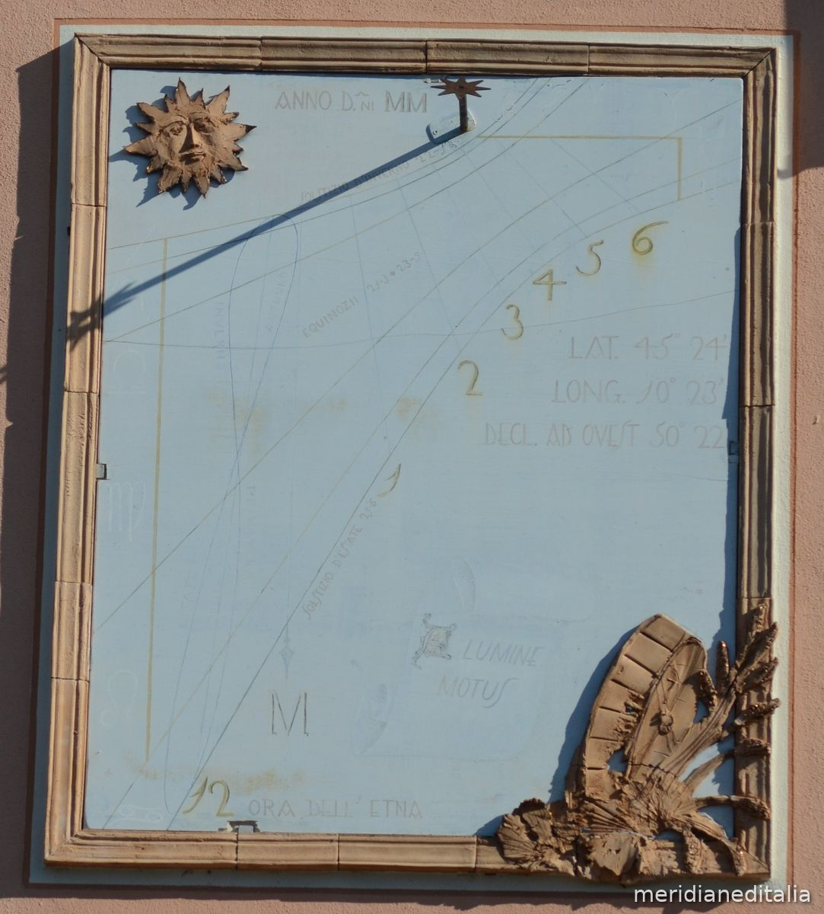

Meridiana 1

“nessun motto”
Le voci di questa meridiana
Testimonianze personali, non verificate dal catalogo.
Nessuna voce dei visitatori ancora: scrivi la prima.
Note della scheda
Bellissima meridiana dai colori vivaci
MERIDIANE CATALOGATE
Provincia di Brescia · Lombardia — 2 meridiane catalogate

Testimonianze personali, non verificate dal catalogo.
Nessuna voce dei visitatori ancora: scrivi la prima.
Bellissima meridiana dai colori vivaci

Testimonianze personali, non verificate dal catalogo.
Nessuna voce dei visitatori ancora: scrivi la prima.
Dalla luce il movimento